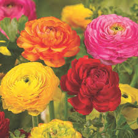

Flores Más Conocidas
En esta sección se encuentran las flores más conocidas ya sea por su belleza o por fragancia.

Rosas: Las rosas son las reinas indiscutibles del jardín cuando se trata de fragancia. Disponibles en una amplia variedad de colores y tamaños, las rosas desprenden un aroma dulce y embriagador que llenará el aire de romanticismo y elegancia.
Geranio: Se presenta en una amplia variedad de colores y su fragancia cítrica y fresca. Estas flores se pueden cultivar fácilmente en macetas colgantes y su aroma llenará el aire con una sensación de frescura y vitalidad. Los geranios también tienen la ventaja de ser repelentes de mosquitos.
Lavanda: La lavanda es una de las plantas con flores aromáticas más populares y versátiles. Su fragancia relajante y herbácea es perfecta para crear un ambiente tranquilo y apacible en tu jardín. Además, la lavanda también repele a los insectos no deseados, lo que la convierte en una opción ideal para alejar a los mosquitos.
Jazmin: Es conocido por su fragancia dulce y exótica que llena el aire durante las noches de verano. Sus flores blancas o amarillas desprenden un aroma intenso y sensual, siendo una opción perfecta para crear un ambiente relajante y romántico.
Gardenia: Es otra flor exquisitamente perfumada que agrega un toque de lujo a tu jardín. Sus flores blancas emanan una fragancia intensa y dulce, que evoca imágenes de jardines tropicales.
Tulipan: Suelen tener un tallo simple que puede medir hasta sesenta centímetros. Sus hojas, lanceoladas, son grandes. En la parte superior del escapo aparece la flor, también de dimensiones importantes, que se caracteriza por sus colores.
Flor de Chocolate: Es una hermosa flor perenne que destaca por sus pétalos de color marrón oscuro y su distintivo aroma a chocolate y vainilla. Originaria de México, esta flor ha ganado popularidad debido a su fragancia única y su apariencia exótica.
Lilas: Desprenden un aroma inconfundible y embriagador. Sus racimos de flores en tonos de púrpura, blanco o rosa llenarán tu jardín con un perfume dulce y floral. La lila es una planta de clima fresco y crece mejor en suelos bien drenados y soleados.
Clavel: El clavel es una flor muy aromática que ofrece una amplia gama de colores vibrantes. Su fragancia dulce y especiada aporta un toque clásico y romántico a cualquier jardín.
Flores Antiguas

Rafflesia arnoldii: Es la flor más grande del mundo y también una de las más antiguas. Se cree que ha existido durante más de 45 millones de años. Esta flor se encuentra en Indonesia y es conocida por su gran tamaño y su olor para nada agradable.
Loto: El loto es una flor sagrada en muchas culturas y se cree que ha existido durante más de 145 millones de años. Esta flor se encuentra principalmente en Asia y es conocida por su belleza y su capacidad para crecer en aguas estancadas.
Ephedra: La Ephedra es una flor que se originó hace más de 150 millones de años y se encuentra en regiones áridas de todo el mundo. Esta flor es conocida por su capacidad para producir efedrina, un compuesto utilizado en la medicina moderna.

Ginkgo Biloba: Es una flor que se originó hace más de 200 millones de años y se encuentra principalmente en China. Esta flor es conocida por sus propiedades medicinales y su capacidad para mejorar la memoria y la concentración.
Cycas: Es una flor que se originó hace más de 280 millones de años y se encuentra en regiones tropicales y subtropicales de todo el mundo. Esta flor es conocida por su capacidad para crecer en suelos pobres y por su uso en la medicina tradicional.

Welwitschia mirabilis: Es una flor que se originó hace más de 400 millones de años y se encuentra en el desierto de Namibia. Esta flor es conocida por su capacidad para sobrevivir en condiciones extremas y por su longevidad, ya que puede vivir hasta 1500 años.

Water lilies: Son flores acuáticas que se originaron hace más de 160 millones de años y se encuentran en todo el mundo. Estas flores son conocidas por su belleza y su capacidad para purificar el agua en la que crecen.
Magnolia: Es una flor que se originó hace más de 95 millones de años y se encuentra principalmente en Norteamérica y Asia. Esta flor es conocida por su belleza y su uso en la medicina tradicional.
Orquideas: Se originaron hace más de 80 millones de años y se encuentran en todo el mundo.
Flores Exóticas

Lirios de Cala: Tambien llamada alcatraces son una flores muy demandandas en ramos de bodas, lo que aumenta su costo. Se cultiva naturalmente en Africa.
Ranunculus: Su aspecto es similar a la rosa, pero su costo es mucho mas elevado por ser mucho menos comun.
Peonía: Son flores que unicamente florecen durante 3 meses del año: Abril, Mayo y Junio. Son originarias de Asia y America del Norte.

Lisianthus: Sus petalos anchos, ondulados y delicados, no suelen sobrevivir mas de una semana. En su version de color blanco, son tambien llamadas flores de papel.

Jazmin de Madagascar: Es una flor presente en eventos, bodas y celebraciones por excelencia.

Lirio de Fuego: Florecen durante la primavera y al comenzar el verano. Cada flor cuenta con 6 pétalos y una llamativa forma tubular con una ligera curvatura.

Azafan: Podra sorprenderte su belleza y color vibrante, pues es la flor mas costosa del mundo.

Orquidea Azul: Se origina en Tailandia, Laos, Vietnam y Camboya. Es tambien una flor fragante que require de climas calidos y humedos para crecer.

Flor cactus de noche: Es tambien llamada "La Reina de la Noche" o "Flor de luna". Pertenece a la familia de los cactus. Nativa de America Central y del Sur. Florece solo druante la noche, y dura solo pocas horas.